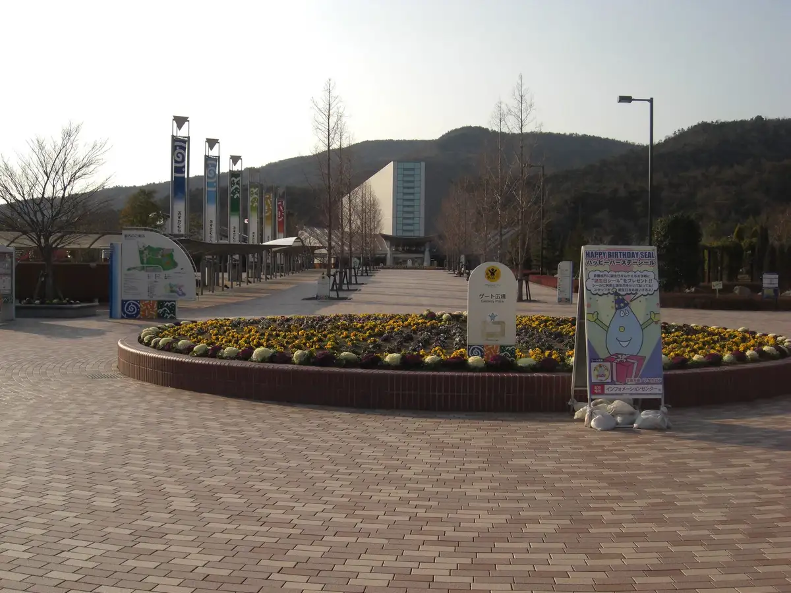
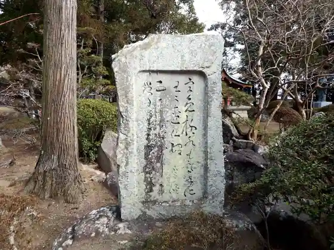
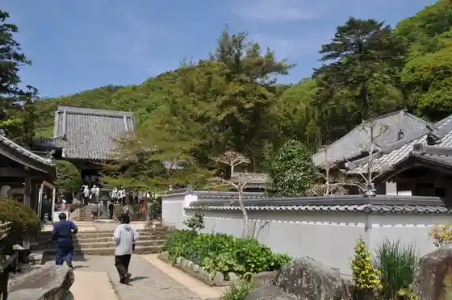

Itano
Itano · Tokushima
Itano
Highlighted on the Tokushima map.

Sights
Asutamurando Toku Shima
Kanaizumi Tera (Shikoku Reijo Daisan Ban Fudasho)

Dainichi Tera (Shikoku Reijo Daiyon Ban Fudasho)

Jizo Tera (Shikoku Reijo Daigo Ban Fudasho)
Itano Rekishi Bunka Park
Hokoku Tera
Roadside Station Ita no
Asebi Onsen Yasuragi no Sato
Itano Den'en Park